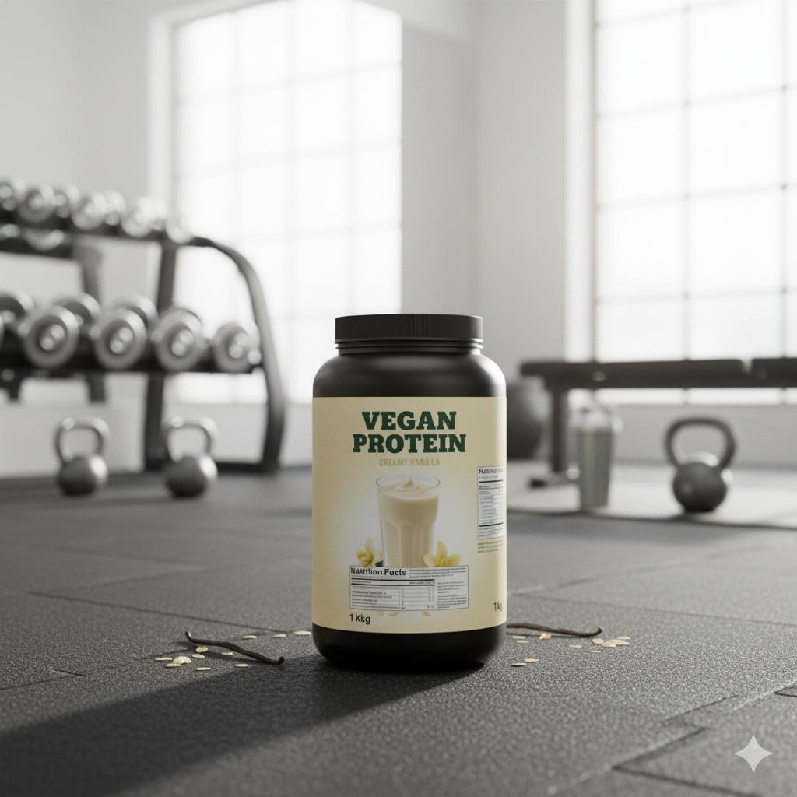

%100 Bitkisel
Vegan Protein Bezelye & Pirinç Karışımı
Doğanın gücüyle kaslarınızı besleyin. Hayvansal katkı yok, bahane yok.
FORMLAB Vegan Protein, tek bir bitkisel kaynağa bağlı kalmaz. Bezelye ve pirinç proteini izolatlarının mükemmel kombinasyonuyla, hayvansal proteinlere eşdeğer bir amino asit profili sunar. Sindirimi kolaydır, şişkinlik yapmaz ve tamamen doğaldır.
Ürün Avantajları
check_circle
24g Bitkisel Protein
check_circle
Tam Amino Asit Profili (BCAA'lı)
check_circle
Laktoz, Gluten ve Soya İçermez
check_circle
Sürdürülebilir ve Doğa Dostu
nutrition Besin Değerleri
| Besin Öğesi | 1 Ölçek (30g) | 100g İçin |
|---|---|---|
| Enerji | 110 kcal | 366 kcal |
| Protein (Bitkisel) | 24 g | 80 g |
| Karbonhidrat | 1.5 g | 5 g |
| - Şeker | 0.1 g | 0.3 g |
| Yağ | 1.8 g | 6 g |
| Lif | 1.2 g | 4 g |
blender Hazırlanışı
1 ölçek tozu, 300ml soğuk su veya bitkisel süt (badem, yulaf, soya) ile shaker'da karıştırın.
İpucu: Smoothie'lerinize ekleyerek besin değerini artırabilirsiniz.
eco Alerjen Uyarısı
Bu ürün süt, yumurta veya soya içermez. Çapraz bulaşmayı önleyen özel bir tesiste üretilmiştir.
help Sıkça Sorulan Sorular
Bitkisel protein, Whey protein kadar etkili mi? keyboard_arrow_down
Tek bir bitki kaynağı (sadece bezelye gibi) bazen eksik kalabilir. Ancak FORMLAB Vegan Protein, bezelye ve pirinç proteinlerini birleştirerek Whey proteinine eşdeğer "tam profil" bir amino asit zinciri sunar ve kas gelişimini aynı şekilde destekler.
Tadı nasıl? (Toprak gibi mi?) keyboard_arrow_down
Eski nesil vegan proteinlerin o "topraksı" tadı artık yok. Yeni nesil tatlandırıcılar ve pürüzsüzleştirilmiş formül sayesinde içimi son derece keyifli, yumuşak ve lezzetlidir.
Süt alerjisi olanlar kullanabilir mi? keyboard_arrow_down
Evet. Ürünümüz %100 bitkiseldir ve doğal olarak laktoz (süt şekeri) içermez. Süt ürünlerine karşı şişkinlik veya gaz problemi yaşayanlar için en iyi alternatiftir.
Soya içeriyor mu? keyboard_arrow_down
Hayır. Soya proteini alerjen olabileceği ve GDO riski taşıdığı için formülümüzde soya kullanmıyoruz. Sadece bezelye ve pirinç proteini izolatları içerir.
Zayıflamak isteyenler kullanabilir mi? keyboard_arrow_down
Evet. Bitkisel proteinler doğal olarak lif içerir (1.2g), bu da tokluk hissinin daha uzun sürmesini sağlar. Düşük yağ ve şeker oranıyla diyet listeleri için uygundur.
Sadece veganlar mı kullanmalı? keyboard_arrow_down
Hayır. Vegan olmayan sporcular da sindirim sistemlerini dinlendirmek, beslenmelerini çeşitlendirmek veya çevresel ayak izlerini azaltmak için dönüşümlü olarak bitkisel protein kullanabilirler.